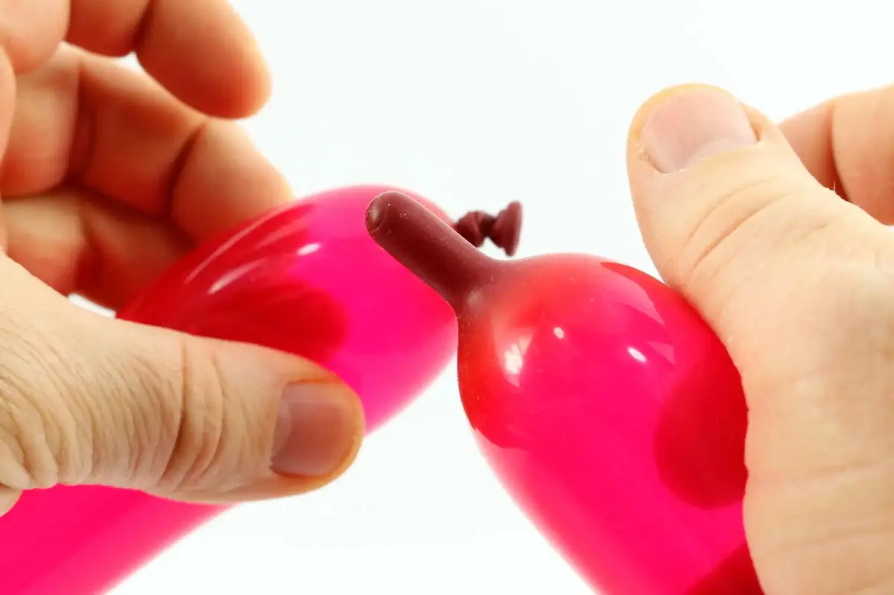
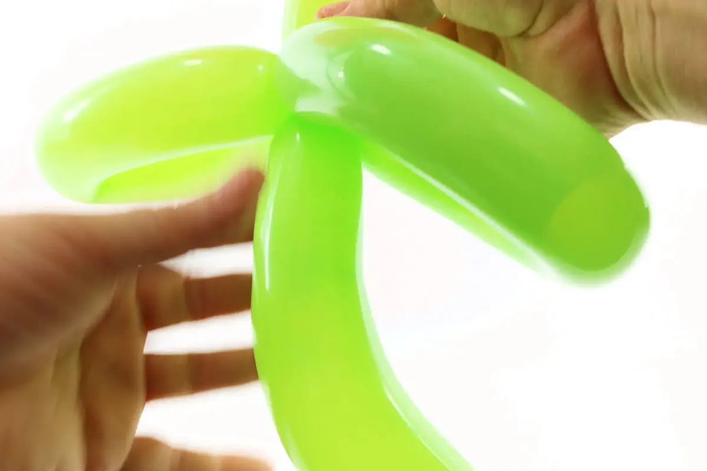

This is the basic model for the balloon flower which is most widespread. Now, basic doesn't necessarily mean simple.
As such, all basic skills used to create this model have all been seen in the previous tutorials; however, the trick that enables you to create 6 petals with a single movement will likely require some time to get used to and several practice sessions.
So at the beginning, you may want to inflate the balloon rather less than more, to make things a bit easier.
1- Inflate one balloon all the way, then let a little air out before tying a knot, so that the balloon is more supple and workable.2- Make sure that air pressure is evenly balanced throughout the balloon.3- Pick up the tip of the balloon and press it...4- to push back a little air, in order to reclaim a short length of latex.

5- Bring both ends of the balloon together.6- Tie both ends of the balloon together to form a large loop.7- Bring each side of the loop flat against the other.8- Find the middle of the loop, across from the knot, and form a crease.9- Create two large bubbles at the level of this crease10- You should get this shape. This next part will be a little complex; you will likely have to try several times before you get the hang of it.11- Take the large bubbles together in your hands, dividing their length into three roughly equal parts. Alternating each of your hands, you need to press and twist both segments around their base as if you were making regular bubbles.12- Only here, you're making two bubbles at once, and on top of it your hands aren't moving entirely freely, since they're working more or less at the same time on two different parts of the balloon.13- Once the bubbles are shaped to your satisfaction, Arrange them in a zigzag shape, like this.14- Hold one end in place with your support hand.15- And compress the other end with your twisting hand.16- The idea here is to bring the creases of the bubbles together, and thus fold all 6 bubbles to turn them into small loops (these will be the flower petals).17- Ultimately, the support hand will have to grip all of the creases between its thumb and forefinger and be able to hold all 6 bubbles on its own. It's a bit physical, but it's doable after a few tries.18- With the twisting hand, take the 3 loops from one end, and twist them together at the base of the folds held in the support hand.19- Rotate several times until the petals are all supporting each other in place.20- The petals are done, now let's work on the stem.21- To make the stem, inflate a balloon, preferably a green one, leaving a margin about 3 fingers wide.22- Start by making a tulip-twist.23- Pull any 2 petals apart to insert the crease of the tulip-twist between them24- To lower pressure and avoid either balloon bursting, you need to gently insert the tulip-twist forward in a few successive circular motions, rather than forcing it straight through in one go.25- Turn the flower over and do the same with the rest of the green balloon, so that the bottom of the stem is also located right at the center of the petals.26- Make two small bubbles one after the other.27- Turn the second bubble into a pinch-twist.28- The idea is to have the stem more or less in the same alignment as the flower petals.29- Push the air back to the tip of the remaining length of balloon and make sure the air pressure is distributed evenly throughout its length.30- Bend the remaining portion of balloon into a zigzag. The tip can slightly stick outside of the zigzag.31- Press and block the middle of the zigzag in place and twist both sides of the zigzag in opposite directions. This gives us, in a single movement, two loops of equal length that will form the leaves of the flower.32- Curve the top of the stem a little to give it a more dancing, natural-looking shape.

33- Do the same with the bottom of the stem.There! And see you soon! For another lesson... with Môssieur Ballon!